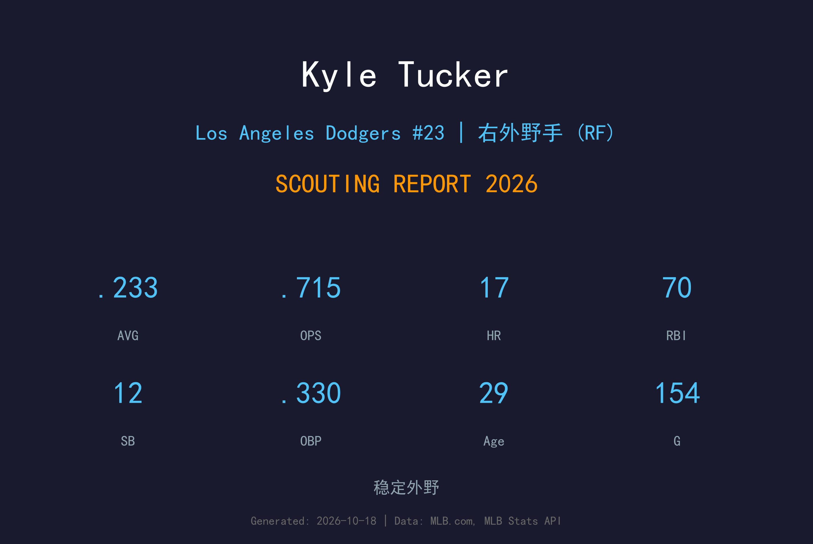
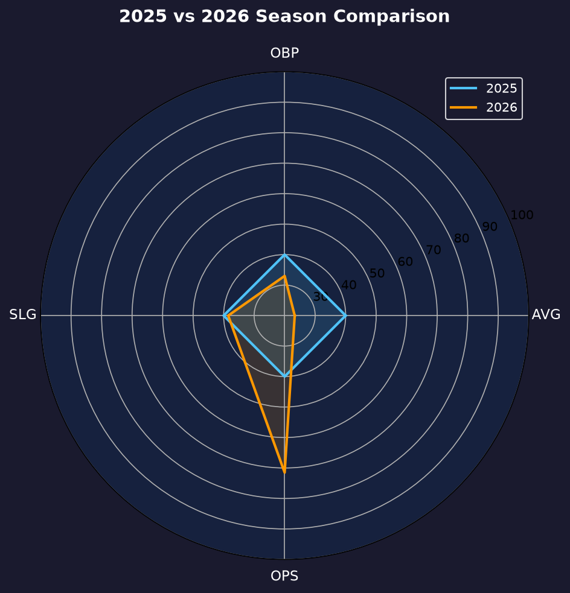
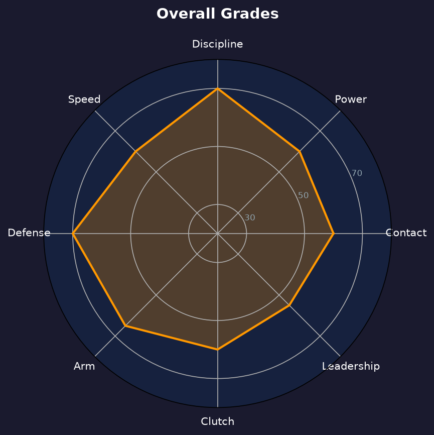

Los Angeles Dodgers #23 | 右外野手 | 左打 | 强力外野

Kyle Tucker 是当今大联盟最具天赋的右外野手之一，以卓越的力量-速度组合、顶级选球能力和金手套级别的防守著称。
他在2025年于小熊队打出.266/.377/.464、22轰、25盗的精英赛季，证明自己是联盟前五的右外野手。2026年加盟道奇的完整赛季，他的打击率降至生涯低谷的.233，但17轰、70打点、12盗的产量仍属主力外野水准；.330的上垒率与.097的OBP-AVG差距再次印证其顶级plate discipline。
Tucker 全季出赛154场，是全队出勤最稳定的打者之一。挥棒平顺、防守范围大、臂力优秀，是道奇外野防线的核心人物。季后赛他更是球队最稳定的火力点，是道奇打线的关键武器。
生涯早期即随太空人夺冠，积累丰富季后赛经验。
攻守俱佳的赛季，确立联盟顶级右外野手地位。
.266 AVG | .377 OBP | .464 SLG | 22 HR | 73 RBI | 25 SB
精英级别的全能表现，自由市场最炙手可热的强打好手。

| 赛季 | G | AVG | OBP | SLG | OPS | HR | RBI | BB | SO |
|---|---|---|---|---|---|---|---|---|---|
| 2025 | 136 | .266 | .377 | .464 | .841 | 22 | 73 | 87 | 88 |
| 2026 | 154 | .233 | .330 | .385 | .715 | 17 | 70 | 78 | 105 |
Tucker 的挥棒路径长而流畅，出手点低，能够产生强劲的拉打力量。他的左打挥棒很适合道奇体育场的右外野短墙，但2026年全年他的击球仰角依然偏低，长打率最终停在.385，明显低于2025年的.464，这是他休赛期最需要修正的一环。
选球是 Tucker 最核心的竞争力。2026年整季他选到78次保送（保送率12.4%），上垒率.330，OBP-AVG差距高达.097——在打击率只有.233的情况下仍能维持.330上垒，正是顶级选球眼的体现。他不会被坏球诱惑，经常能迫使投手进入有利count。
Tucker 的右外野防守达到金手套级别。6'3"的身材加上出色的第一步反应，使他能覆盖大量范围。臂力准确且有力，能够有效阻止跑者推进。
赛季前半他一度只有7轰，但下半程找回长打节奏，最终缴出17轰、70打点，并跑出12次盗垒（成功率100%）。打击率.233是生涯低谷，但 .330上垒率与154场出赛证明他仍是打线中不可或缺的发动机。力量输出距离2025年的22轰仍有差距，主要问题依然是击球仰角与滚地球偏多（GO/AO 0.72）。

攻守兼备的右外野手，只要找回长打节奏，仍是联盟顶级外野
A- 级 / 全明星外野
道奇 2026 季后赛战绩：NLDS 3-1 晋级、NLCS 0-4 止步。
| G | PA | AVG | OBP | SLG | OPS | HR | RBI | SB | BB | SO |
|---|---|---|---|---|---|---|---|---|---|---|
| 8 | 31 | .333 | .419 | .519 | 0.938 | 1 | 2 | 2 | 4 | 5 |
Kyle Tucker 以29岁黄金年龄打完在道奇的首个完整赛季。核心技能（选球、防守、跑垒）保持高水准，长打也在下半程明显回温。打击率的低迷有 BABIP 运气成分，也有击球品质的真实下滑，是他休赛期调整的重点。
2026：154场、17轰、70打点、12盗、.233/.330/.385——产量符合主力外野预期，打击率待修复
2027-2028：若找回击球仰角，有望回到.250/.350/.450、22轰+15盗的全明星水准
2029+：随着年龄增长速度下降，但凭借选球和防守仍具高价值
Kyle Tucker 出生于佛罗里达州坦帕，棒球基因深厚：他的父亲 Fred Tucker 和哥哥 Preston Tucker 都曾在职业棒球体系打拼。Kyle 在高中时期就是全美瞩目的强打少年，2015年MLB选秀中，他在首轮第5顺位被休斯顿太空人选中。
在太空人农场系统，Tucker 迅速展现出顶级天赋，2018年登上大联盟。他在2022年帮助球队夺得世界大赛冠军，并在2023年入选全明星。2025年，他在芝加哥小熊队打出职业生涯最完整的一个赛季，成为自由市场最大牌的强打外野手之一。
2026年，Tucker 加盟洛杉矶道奇队，与外野搭档 Andy Pages、Teoscar Hernández 组成强力外野防线。他的防守和选球使他成为道奇打线中不可或缺的一员。
场外，Tucker 以低调和职业态度著称。他喜欢钓鱼和高尔夫，是球队更衣室中稳定的存在。